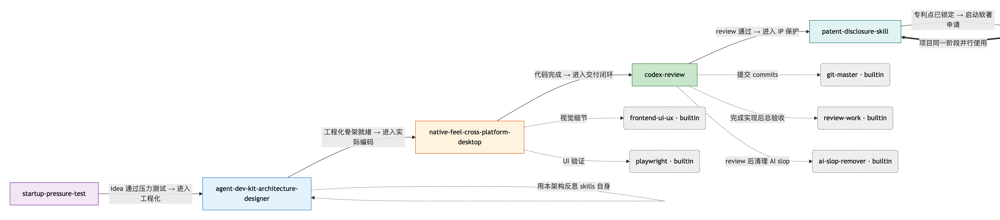
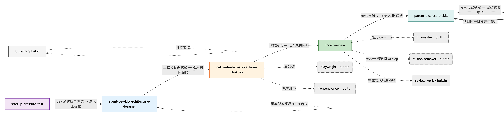
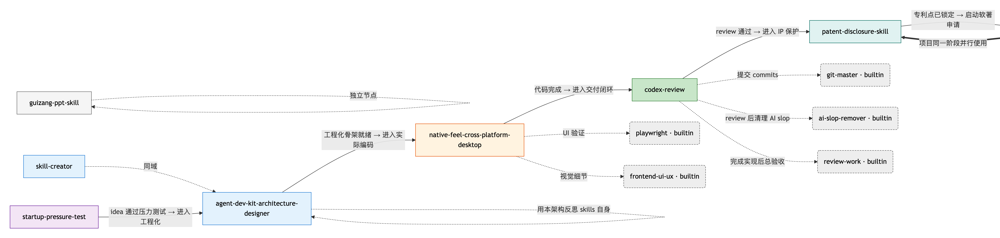

在线参考手册
技能手册
OpenCode 技能生命周期的统一参考：6 个域、11 个方法、技能图谱与 4 个真实演化案例。
最后更新: 2026-05-16 · 在 GitHub 编辑
§1. 概览
本页是 OpenCode 技能日常管理的核心查询页。把它当作"始终打开的速查手册"——下面 5 个章节从最基础的分类规则讲到真实 graph 演化，逐层递进。
本页包含什么
- 6 个 skill 域的判定规则与关键词
- 11 个 slash 命令的精炼参考表
- 当前 Skills Graph 的实时渲染 + 图例
- 场景套餐表（哪种任务该装哪些 skill）
- 4 个真实/假想的图演化案例（State 0 → State 3）
本页不包含
- 安装步骤——见 Getting Started
- 两层架构详解——见 Architecture
面向谁
- 已经装好 ≥ 3 个 skill、需要"该装哪个 / 调哪个"快速决断的用户
- 想理解为什么 graph 长这样、graph 装新 skill 后怎么变的开发者
- 需要远程查询而不能跑命令的场景（飞机、客户笔电、纯 Web）
§2. 域分类
6 个域。一条规则：当判定不确定时，向用户提问。分类器永远不会暗中误归类。
推断算法
- 把 skill 的 name + description 拼接、转小写
- 对每个域，统计关键词在文本中的出现次数（每词最多算一次）
- 取得分最高的域。平局时按域优先级取第一个：
ip → desktop → founder → meta → closeout → tooling- 若所有得分为 0 → 返回 uncategorized，agent 提示用户手选
6 个域
何时进入： 代码已写完，进入最后一公里——commit / PR / release / lint / audit。
何时进入： 跨平台桌面应用，且用户体感必须像原生。
何时进入： 手上是点子或早期产品，在判断「这事值不值得做」。
何时进入： 项目进入商业化保护阶段——把代码资产变成可申报的法律文件。
何时进入： 不绑定特定项目类型，但任何项目都可能需要的能力。
回归测试
当前 7 个 skill 全部回归用例 7/7 通过：
| Skill 名称 | 期望域 | 命中证据 |
|---|---|---|
agent-dev-kit-architecture-designer | agent / hook / subagent / plugin | |
codex-review | closeout | codex review / 二次审查 / ship / commit / PR |
native-feel-cross-platform-desktop | desktop | tauri / webview / raycast / wkwebview |
startup-pressure-test | founder | icp / mvp / founder-market fit |
patent-disclosure-skill | ip | 专利 / 交底书 / 国知局 |
software-copyright-materials | ip | 软件著作权 / 软著 |
guizang-ppt-skill | tooling | ppt / swiss style / html |
更新规则
更新关键词时：先改
agent/docs/domain-taxonomy.md
，再改
agent/lib/domain_inference.py
中的 KEYWORDS 表，最后跑 pytest 回归。
§3. 11 个方法
11 个 slash 命令按生命周期阶段分组。每条都有读/写/生命周期标记，方便快速判断对系统状态的影响。
阶段一：技能生命周期
| 命令 | 作用 | 阶段 |
|---|---|---|
/skill-install <url> | 通过 portal API clone → 推断域 → 加 INDEX.md → 加 graph 节点并重渲 PNG → 刷新（7 步，写） | 写 |
/skill-uninstall <name> | install 的逆操作。确认 → 删 graph 节点 → 删 INDEX 行 → DELETE 物理文件（4 步，写） | 写 |
/skill-update <name|all> | 在 skill 目录跑 git pull --ff-only，然后刷新 portal 索引 | 写 |
阶段二：检查与查询
| 命令 | 作用 | 阶段 |
|---|---|---|
/skill-list | 只读：按域分组打印所有已装 skill，含描述与触发词 | 读 |
/skill-recommend <task> | 把自由文本任务匹配到场景套餐表或对关键词打分；输出 load_skills=[…] | 读 |
/skill-doctor [name|all] | 5 条规则体检：frontmatter / 目录名 / INDEX 收录 / graph 收录 / 依赖 | 读 |
阶段三：维护
| 命令 | 作用 | 阶段 |
|---|---|---|
/skill-classify <name> | 把一个 skill 在域之间移动；同时改 INDEX 行、graph 节点、classDef | 写 |
/skill-graph-sync | 把 graph 与 INDEX 对齐；检测 MISSING / EXTRA / MISMATCH；幂等 | 写 |
阶段四：Portal 控制
| 命令 | 作用 | 阶段 |
|---|---|---|
/portal-start | 把 portal 起来；幂等；自动检测 portless HTTPS | 生命周期 |
/portal-stop | 杀 5173 + 5174 端口上的进程；幂等 | 生命周期 |
/portal-status | 只读：API 是否在跑、端口、PIDs、上次索引时间、skill 数量 | 读 |
完整命令参考
每个命令的完整提示模版在仓库源码
.opencode/commands/
on GitHub.
§4. 技能图谱
图谱是 6 个域 + builtin skill 之间关系的可视化视图。读懂图谱 = 读懂"在哪个项目阶段，该叠哪个 skill"。
4.1 图例：怎么读图
- 实线 — 生命周期依赖
- 虚线 — 跨域增援
- 双向 — 并行耦合
- closeout
- desktop
- founder
- ip
- tooling
- box 用户安装的 skill
- round 内置（无需安装）
-
SID
guizang-ppt-skill→GPS
4.2 当前实时图谱
下面是当前 8 个安装 skill 的实时 mermaid 渲染（与仓库
skills-graph.mmd
同源）。
4.3 典型场景套餐
常见场景下"该一次性 load 哪几个 skill"的速查表。直接复制 load_skills 数组到 task() 即可：
| 场景 | 加载组合 | 备注 |
|---|---|---|
| 「我有个新点子，看看靠不靠谱」 | ["startup-pressure-test"] | 单 skill——不要立刻加 ADK |
| 「搭一个跨平台桌面 app 的脚手架」 | ["agent-dev-kit-architecture-designer", "native-feel-cross-platform-desktop"] | ADK 给工程结构；NF 给桌面架构原则 |
| 「PR 准备 ship 之前」 | ["codex-review", "git-master", "review-work"] | 审查三件套 |
| 「这个项目要申请软著 + 挖专利」 | ["patent-disclosure-skill", "software-copyright-materials"] | IP 双子星必须一起加——保持软件名 / 版本号在两个流程里一致 |
| 「给现有 OpenCode 仓库做架构审计」 | ["agent-dev-kit-architecture-designer"] | 单 skill——输出五层架构 gap 分析 |
| 「我的 Electron 应用启动慢 / 窗口卡」 | ["native-feel-cross-platform-desktop", "playwright"] | NF 出诊断方向；playwright 验证 fix |
| 「基于这篇文章做一份瑞士风 PPT」 | ["guizang-ppt-skill"] | tooling 域 skill，不需要搭档 |
| 「从零创建一个新 skill」 | ["skill-creator"] | meta 域——bootstrap 另一个 skill |
§5. 图谱演化案例
5 个图谱状态，按时间序展示新装 skill 时图谱怎么变。
5.1 State 0：初始 6-skill
项目刚搭起的最初状态：6 个用户级 skill + 5 个 builtin。一条 founder → meta → desktop → closeout → ip 的主生命周期链。
- 6 个用户级 skill：ADK、CR、NF、SPT、PAT、SCS
- 5 个 builtin（虚线边框）：GM、RW、ASR、FE、PW
- 主链：SPT → ADK → NF → CR → PAT → SCS

5.2 State 1：装 guizang-ppt-skill 后
触发命令： /skill-install https://github.com/op7418/guizang-ppt-skill
tooling 域块自动创建，GPS 节点孤立加入。agent 自动添加 toolingDomain classDef。
- 推断结果：tooling 域（命中 ppt / swiss style / html，得分 3）
- 新节点：GPS[guizang-ppt-skill]:::toolingDomain
- 新边：GPS 自环 fallback（同域无 peer）

5.3 State 2：装 skill-creator 后
触发命令： /skill-install https://github.com/anthropics/skills --subdir skills/skill-creator
skill 的 description 过宽，关键词推断返回 uncategorized，agent 提示用户手工归 meta。SC 与 ADK 同域，自动加 dashed 边。
- 推断结果：uncategorized → 用户手选 meta
- 新节点：SC[skill-creator]:::metaDomain
- 新边：SC -. "同域" .-> ADK

5.4 State 3：装 agent-reach 后
触发命令： pipx install agent-reach && agent-reach install --env=auto
agent-reach 是个特殊 skill —— 来自 Python CLI 工具（pipx install agent-reach），SKILL.md 落在 ~/.agents/skills/。通过软链桥接到 opencode 和 portal。归入 tooling 域，与 GPS 同域。
- 推断结果：meta（命中 agent）→ 手工归到 tooling（更符合「横切层」定位）
- 新节点：AR[agent-reach]:::toolingDomain
- 新边：AR -. "同域" .-> GPS（tooling 域内 peer 已存在）
- 桥接：~/.config/opencode/skills/agent-reach → ~/.agents/skills/agent-reach（symlink）

5.5 State 4：装 superpowers 全套（14 个 sub-skill）
触发命令： /skill-install https://github.com/obra/superpowers (× 14 sub-paths)
obra/superpowers 是一个 monorepo 形态的 skill 集合——14 个独立 sub-skill 覆盖工程方法论：brainstorm / TDD / subagent / debug / review 全链。8 个归 meta 域（方法论与工程基础设施），6 个归 closeout 域（review/branch/verification）。一次性装入，让 agent 拥有完整的「decompose → execute → review → finish」能力。
- monorepo 形态：obra/superpowers 仓库下 skills/ 子目录里 14 个独立 SKILL.md，每个走 portal API 单独装
- 推断挑战：14 个里 7 个返回 uncategorized，agent 按 "工程方法论 → meta，提交闭环 → closeout" 原则手工归类
- meta 域新增 8 个：brainstorming / dispatching-parallel-agents / subagent-driven-development / systematic-debugging / test-driven-development / using-superpowers / writing-plans / writing-skills
- closeout 域新增 6 个：executing-plans / finishing-a-development-branch / receiving-code-review / requesting-code-review / using-git-worktrees / verification-before-completion
- 图谱体积：280641 → 508189 字节（+81%），meta/closeout 两个域块都明显变大
- 核心价值：让 agent 在做复杂工程时有「先 brainstorm、再写 plan、然后 TDD、并行 dispatch、最后 verify-before-completion」的方法论支架
§6. 相关索引
本手册是入口；以下文档进一步深入：
- Getting Started — 在新机器上 10 分钟搞定安装
- Architecture — 两层设计、5 个 Python lib 模块、安装时序图
agent/docs/domain-taxonomy.md— 6 域规则的真相源
源码索引
.opencode/commands/— 11 个 slash 命令的提示模版（Markdown）agent/lib/— 5 个 Python 模块（portal_client, domain_inference, index_md_writer, graph_writer, doctor）portal/— FastAPI + Vite/Vue 本地站点